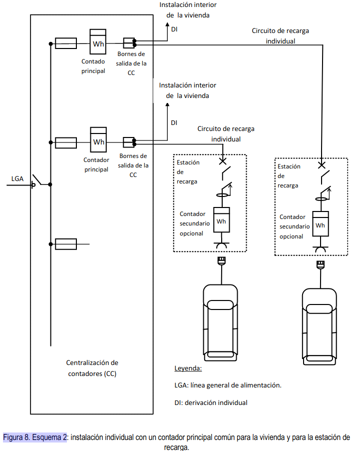

3. ESQUEMAS DE INSTALACION PARA LA RECARGA DE VEHICULOS ELECTRICOS
3.0¶
Las instalaciones nuevas para la alimentación de las estaciones de recarga, así como la modificación de instalaciones ya existentes, que se alimenten de la red de distribución de energía eléctrica, se realizarán según los esquemas de conexión descritos en este apartado. En cualquier caso, antes de la ejecución de la instalación, el instalador o en su caso el proyectista, deben preparar una documentación técnica en la forma de memoria técnica de diseño o de proyecto, según proceda en aplicación de la (ITC) BT-04, en la que se indique el esquema de conexión a utilizar. Los posibles esquemas serán los siguientes:
-
- Esquema colectivo o troncal con un contador principal en el origen de la instalación.
-
- Esquema individual con un contador común para la vivienda y laestación de recarga.
-
- Esquema individual con un contador para cada estación de recarga.
-
- Esquema con circuito o circuitos adicionales para la recarga del VEHÍCULO ELÉCTRICO.
Warning
Independientemente del esquema utilizado, las instalaciones serán realizadas por un instalador de la categoría que correspondasegún el tipo de instalación, porejemplo, en el caso de proyectarse la instalación en locales con riesgo de incendio o explosión segúnla ITC -BT 29, el instalador deberá ser de la categoría especialista.
Debido al alto grado de electrónica de potencia a instalar y a la gran variedad de fabricantes de vehículos y tecnologías de recarga que se pueden llegar a conectar a la red de distribución, así como para facilitar la futura instalación de sistemas SPL que permitan incrementar el número de vehículos a recargar sin que sea preciso modificar las instalaciones de enlace, en las centralizaciones de contadores de las nuevas instalaciones se recomienda reservar espacio suficiente para quelas empresas distribuidoras puedan instalar en caso necesario filtros PLC,que eviten queel ruidoen el rango de frecuencias PLC (procedentes de los distintos sistemas de recarga o de los propios vehículos) afectea la telegestión del resto de contadores conectados a la misma red baja tensión y para poder instalar igualmenteelementos para la gestión de cargas desde el SPLo en general, para el funcionamiento correcto de los distintos esquemas de conexión,tales comocontactores.
Con tal fin, las empresas distribuidoras de energía eléctrica podrán disponer de especificaciones particulares donde establezcan las características sobre la construcción y montaje de las centralizaciones de contadores preparadas para la conexión del vehículo eléctrico. Según se establece en el artículo 14 del RD 842/2002 dichas especificaciones deberán ser aprobadas por la administración competente.





Warning
Este esquema 4a también se puede utilizar eninstalaciones para la recarga de vehículos eléctricos en edificios o conjuntos inmobiliarios en régimen de propiedad horizontal según lo establecido en el apartado3.2 de esta ITC-BT-52, siempre que la infraestructura común del edificio esté preparada para albergar este tipo de instalación. Su uso generalizado en garajes en régimen de propiedad horizontal supondría grandes caídas de tensión y la necesidad de disponer de patinillos para las derivaciones individuales de grandes dimensiones, de forma que se recomienda su utilización solo en los siguientes casos:
- Viviendas unifamiliares
- Fincas de cualquier tipo con un único suministro
Con el objetivo de mantener el nivel de seguridad, cuando con motivo de la instalaciónde los nuevoscircuitos para la recarga de vehículos eléctricos se realiceuna modificación en la instalación interior de lavivienda (por ejemplo en el cuadro de mando y protección), se recomienda realizar una revisión de la instalación existente, según la UNE 202008 IN.
Warning
Conforme alo establecido en el apartado 3.2 de esta ITC-BT-52, este esquema 4b se puede utilizar para la recarga de vehículos eléctricos en edificios o conjuntos inmobiliarios en régimen de propiedad horizontal, utilizando el cuadro de los servicios generales de los garajes como punto de partida delos circuitos para la recarga del vehículo eléctrico, y utilizando generalmente circuitos de recarga colectivos.
Si en este esquema 4 b o en cualquier otro interviene un gestor de cargas cabe recordar que en aplicación del RD 647/2011 tendrán que registrar en cada una de sus instalaciones los consumos destinados a la recarga de vehículos eléctricos de forma diferenciada a los consumos que puedan producirse para otros usos.
Con el objetivo de mantener el nivel de seguridad, cuando con motivo de la instalación de los nuevos circuitos para la recarga de vehículos eléctricos se realiceuna modificación en la instalación eléctricade los aparcamientosse recomienda realizar una revisión de la instalaciónexistente, según la parte aplicable de laserie de normasUNE 202009IN.
Para la selección entre los esquemas 1a y 1b, se aplicarán los siguientes criterios de prioridad, en primer lugar se utilizarán los módulos de reserva de la centralización existente (esquema 1a), si ello no fuera suficiente se ampliará la centralización existente utilizando también el esquema 1a, en último caso y por falta de espacio, se dispondrán una o varias centralizaciones nuevas en armarios o locales (esquema 1b).
Warning
Para la selección entre los esquemas 1a y 1b se tendrá en cuenta que la centralización de contadores disponga de espacio suficiente la instalación de filtros PLC que bloqueen el ruido en el rango de frecuencias PLC, así como para loselementos necesarios para la gestión de cargas desde el SPL o para el funcionamiento correcto de los distintos esquemas de conexión, tales como contactores.
La protección de los circuitos de recarga se puede realizar con fusibles o con interruptores automáticos. La centralización de contadores para recarga del VEHÍCULO ELÉCTRICO puede formar parte de la centralización existente o disponerse en una o varias centralizaciones nuevas en armarios o locales.
Warning
Para la instalación de los circuitos de recarga colectivos según los esquemas 1a, 1b, 1c, o 4b, se utilizarán cajas de derivación de las que partirán las derivacionesque alimentan a cada estación de recarga. Estas cajas de derivación serán responsabilidad de la comunidad de vecinos ya que en general afectarán a varios vecinos. A continuación,se recomiendan algunas características deestas cajas.
- Se recomienda su montaje en un paramento vertical (columna o pared), a una alturasuperior a 1,8 metros sobre la cota del suelo del garaje.
- Cada caja debe tener la posibilidad de conectar 3 o 6 derivaciones a estaciones de carga (múltiplos de tres para facilitar el equilibrado de cargas).
- En instalaciones nuevas las cajasdebeninstalarse a lo largo de todo su recorrido de forma que ninguna plaza de garaje quede a más de 20 metros de una caja.
- Lascajas podrán albergar pequeños interruptores automáticos cuando sean necesarios para proteger la derivación frente a cortocircuitos.
- Las cajas dispondrán de un sistema de cierre a fin de evitar manipulaciones indebidas de sus conexiones.
Para el esquema 2 en el proyecto o memoria técnica de diseño se justificará que el fusible de la centralización protege contra cortocircuitos tanto a la derivación individual, como al circuito de recarga individual, en especial para la intensidad mínima decortocircuito, incrementando la sección obtenida por aplicación de los criterios de caída de tensión y de protección contra sobrecargas para este circuito, si fuera necesario. La función de control de potencia contratada por el cliente será realizada por el contador principal, sin necesidad de instalar un ICP independiente. En caso de actuación de la función de control de potencia, su rearme se realizará directamente desde la vivienda.
Warning
La función de control de potencia contratada por el cliente será realizada por el contador principal para potencias inferiores a 15 kW, sin necesidad en este caso de instalar un ICP independiente.
El citado rearme puede conseguirse mediante diversas soluciones, por ejemplo:
- Soluciones que requieren la utilización de uno o dos conductoresde mandodesde la vivienda hasta un contactorinstalado en la centralización de contadores, en el circuito de recarga individual o en la propia estación de recarga. Como ejemplos de tales soluciones se incluyen las figuras A1 y A2.Para el hilo de mando se recomienda color rojo y una sección mínima de 1,5 mm2. El contactor se podrá ubicar en la propia estación de carga, o en la centralización de contadores justo en el origen del circuito de recarga. Si se ubica en la centralización de contadores la ventaja es que la longitud del hilo de mando será menor, aunque para instalaciones existentes y por falta de espacio puede ser más sencillo ubicarlo en la estación de carga.
- Soluciones queutilizan dispositivos adicionales para el rearme del contactor yno requieren de conductores auxiliares desde la vivienda hasta elcontactor.Dichos dispositivos pueden estar instalados enla centralización de contadores, enel circuito de recarga individual o en la propia estación de recarga. Como ejemplo de tales soluciones se incluye la figura A3.Una vez interrumpido el circuito de recarga el contador debe apreciar una impedancia infinita que permita su rearme desde la vivienda.
- Cualquier otro método que tecnológicamente pueda realizar esta función de rearme.
A modo de ejemplo en la figura A4 se presenta un ejemplo de centralización de contadores preparada para el esquema 2, conun contador principal común para la vivienda y para la estación de recarga, que permite la conexión o desconexión de la recarga del vehículo eléctrico desde la vivienda, así como el rearme de la función de control de potencia también desde la vivienda, para lo cual se utiliza el hilo de mando ya descrito en la figura A1.


Con el objetivo de mantener el nivel de seguridad, cuando con motivo de la instalación de los nuevoscircuitos para la recarga de vehículos eléctricos se realiceuna modificación en la instalación interior de la vivienda (por ejemplo,en el cuadro de mando y protección), se recomienda realizar una revisión de la instalación existente, según la UNE 202008 IN.
Para la selección entre los esquemas 3a y 3b, se aplicarán los siguientes criterios de prioridad, en primer lugar se utilizarán los módulos de reserva de la centralización existente (esquema 3a), si ello no fuera suficiente se ampliará lacentralización existente utilizando también el esquema 3a, en último caso y por falta de espacio, se dispondrán una o varias centralizaciones nuevas en armarios o locales (esquema 3b).
Los esquemas de instalación descritos en este apartado no resultan aplicables para la conexión de las estaciones de recarga que se alimenten mediante una red independiente de la red de distribución de corriente alterna usualmente utilizada, por ejemplo, mediante una red de corriente continua o corriente alterna ferroviaria, o mediante un fuente de energía de origen renovable con posible almacenamiento de energía, en cuyo caso el diseñador de la instalación especificará el esquema eléctrico a utilizar. Nótese que las figuras 5 a12 son solamente ejemplos ilustrativos de los distintos esquemas de instalaciones de recarga de vehículos eléctricos y que no contienen todos los elementos de la instalación.
3.1 Instalación en aparcamientos de viviendas unifamiliares.¶
En las viviendas unifamiliares nuevas que dispongan de aparcamiento o zona prevista para poder albergar un vehículo eléctrico se instalará un circuito exclusivo para la recarga de VEHÍCULO ELÉCTRICO. Este circuito se denominará circuito C13, según la nomenclatura de la (ITC) BT-25 y seguirá el esquema de instalación 4a.
Warning
En todas las viviendas unifamiliares nuevas el circuito C13 debe quedar totalmente instalando incluyendo los sistemas de canalización, los cables, las protecciones y el punto de recarga. En todas las viviendas unifamiliares nuevas el circuito C13 debe quedar totalmente instalando incluyendo los sistemas de canalización, los cables, las protecciones y el punto de recarga.
Las instalaciones existentes en las que se desee instalar una estación de recarga se ajustarán también a lo establecido en este apartado
La alimentación de este circuito podrá ser monofásica o trifásica y la potencia instalada responderá generalmente a uno de los escalones de la tabla 1, según prevea el proyectista de la instalación. No obstante, el proyectista podrá justificar una potenciamayor, en función de la previsión de potencia por estación de recarga o del número de plazas construidas para la vivienda unifamiliar, en cuyo caso el circuito y sus protecciones se dimensionarán acorde con la potencia prevista.

Para evitar desequilibrios en la red eléctrica los circuitos C13 monofásicos no dispondrán de una potencia instalada superior a los 9200 W.
Cuando en un circuito trifásico se conecten estaciones monofásicas, éstas se repartirán de la forma más equilibrada posible entre las tres fases. El número máximo de estaciones de recarga de la tabla 1 por cada circuito derecarga trifásico se ha calculado suponiendo estaciones monofásicas de una potencia unitaria de 3680 W. El proyectista podrá ampliar o reducir el número máximo si justifica una potencia instalada por estación de recarga inferior o superior respectivamente.
Las bases de toma de corriente o conectores instalados en la estación de recarga y sus interruptores automáticos de protección deberán ser conformes con alguna de las opciones indicadas en el apartado 5.4.
3.2 Instalación en aparcamientos o estacionamientos colectivos en edificios o conjuntos inmobiliarios en régimen de propiedad horizontal¶
Las instalaciones eléctricas para la recarga de vehículos eléctricos ubicadas en aparcamientos o estacionamientos colectivos en edificios o conjuntos inmobiliarios en régimen de propiedad horizontal seguirán cualquiera de los esquemas descritos anteriormente. En un mismo edificio se podrán utilizar esquemas distintos siempre que se cumplan todos los requisitos establecidos en esta (ITC) BT-52.
Warning
En edificios existentes que carezcan de instalaciones para recarga de vehículos, cuando sea necesario realizar las instalaciones para la recarga del primer vehículo, se recomienda que el o los vecinos propietarios de los vehículos a recargar y la propia comunidad de vecinos lleguen a un acuerdo en relación al esquema o esquemas de conexión a implementar en el edificio, sin que la decisión individual de una de las dos partes afecte a la otra, puesto que cada una debería asumir los costes correspondientes a la modificación o construcción de las instalaciones de las que sea titular.
En el esquema 4a, el circuito de recarga seguirá las condiciones de instalación descritas en la (ITC) BT-15, utilizando cables y sistemas de conducción de los mismos tipos y características que para una derivación individual; la sección del cable se calculará conforme a los requisitos generales del apartado 5 de esta ITC, no siendo necesario prever una ampliación de la sección de los cables para determinar el diámetro o las dimensiones transversales del sistema de conducción a utilizar.
Warning
Para instalaciones existentes en garajes en régimen de propiedad horizontalen las que se utilice el esquema 4a para la recarga del vehículo eléctrico se tendrán en cuenta los siguientes aspectos:
- Los cables del circuito de recargase podrán instalar por el interior del mismo Sistema de Conducción de Cables (SCC) de la Derivación Individual (DI) siempre que haya espacio disponible para ello de acuerdo con las reglas de la ITC-BT-21. En este caso los conductores del circuito de recargautilizarán la reservade espacio vacíodel SCCprescrito en la ITC-BT-15.
- En caso que no hubiera suficiente espacio disponibleen el interior del SCC de la DI para poder pasar por su interior los conductores del circuito de recarga se podrá utilizar el tubo o conducción de reserva para DIs siempre que existala canalizacióny tengaespacio disponible para ello,de acuerdo con lasreglas de la ITC-BT 21.
- En caso que no fuera posible instalar el cable del circuitode recargaen el interior del SCC de la DI o por la conducciónde reserva para DIs, será posible instalar dicho cable bien en el interior de un SCC adicional o directamente en la canaladura de obra delas DIs siempre y cuando haya espacio disponiblepara ello.Cuando el circuito de recarga se instale directamente en la canaladura se utilizará cable multiconductor de 0,6/1 kV , de acuerdo con las reglas de la ITC-BT 21.
- Por motivos de espacio y en caso de que ninguna de las anteriores soluciones sea posible, se podrá admitirla instalación de los conductores de circuitosde recarga de distintos suministros porel interior de un mismo sistema de conducción de cables (ya sea el tubo de reserva para derivaciones individuales u otro SCC instalado adicionalmente)siempre que exista espacio disponible según las reglas de la ITC-BT 21. En tal caso, para asegurar la separación necesaria entre suministros, los circuitos C13 deberán realizarse utilizando cable multiconductor de tensión asignada 0,6/1 kV.
El esquema 4b se utilizará cuando la alimentación de las estaciones de recarga se proyecte como parte integrante o ampliación de la instalación eléctrica que atiende a los servicios generales de los garajes. Tanto en instalaciones existentes como en instalaciones nuevas, y con objeto de facilitar la utilización del esquema eléctrico seleccionado, los cuadros con las protecciones generales se podrán ubicar en los cuartos habilitados para ello o en zonas comunes. Las instalaciones en edificios o conjuntos inmobiliarios de nueva construcción se equiparán como mínimo con una preinstalación eléctrica para la recarga de VEHÍCULO ELÉCTRICO, de forma que se facilite la utilización posterior de cualquiera de los posibles esquemas de instalación. Para ello se preverán los siguientes elementos:
- a) Instalación de sistemas de conducción de cables desde la centralización de contadores y por las vías principales del aparcamiento o estacionamiento con objeto de poder alimentar posteriormente las estaciones de recarga que se puedan ubicar en las plazas individuales del aparcamiento o estacionamiento, mediante derivaciones del sistema de conducción de cables de longitud inferior a 20 m. Los sistemas de conducción de cables se dimensionarán de forma que permitan la alimentación de al menos el 15% de las plazas mediante cualquiera de los esquemas posibles de instalación.
- b) La centralización de contadores se dimensionará de acuerdo al esquema eléctrico escogido para la recarga del VEHÍCULO ELÉCTRICO y según lo establecido en la (ITC) BT-16. Se instalará como mínimo un módulo de reserva para ubicar un contador principal, y los dispositivos de protección contra sobreintensidades asociados al contador, bien sea con fusibles o con interruptor automático.
Warning
Así, pues, dado que el porcentaje citado es un mínimo y en base a la creciente demanda de este tipo de vehículos, sería recomendable realizar la preinstalación para el 100% de las plazas.En relación a las potencias previstas será de aplicación lo indicado en el Anexo 2.
Cuando se realice la instalación para el primer punto de conexión en edificios existentes, se deberá prever, en su caso, la instalación de los elementos comunes de forma que se adecúe la infraestructura para albergar la instalación de futuros puntos de conexión.
Warning
e recomienda que los elementos comunes a instalar tales como las canalizaciones y los módulos de reserva en la centralización de contadores sigan las siguientes pautas, no siendo obligatorio que la preinstalación incluya los cables de los circuitos de alimentación del vehículo eléctrico,ni las estaciones de recarga.
-
Cuando en edificios existentes se realice la instalación del primer punto de recarga, se dimensionará la canalizaciónpara albergar la instalación de futuros puntos de recargaen la zona de influencia delpuntoa instalar. El criterio anterior deberá aplicarse también cada vez que se realice la instalación de un nuevo punto de recarga. En el Anexo 1, aplicable a edificios o conjuntos inmobiliarios en régimen de propiedad horizontal, se presenta un ejemplo de cómo dimensionarestas canalizaciones.
-
Cuando en edificios existentes se realice la instalación de un punto de recarga utilizando un esquema que precise deun contador principal adicional (esquemas 1 o 3) y por falta de espacio fuera necesario realizar una nueva centralización de contadores, generalmente en armario, ésta se dimensionará con al menos un módulo de reserva para instalar el contador asociado con un futuro punto de recarga.
Las bases de toma de corriente o conectores instalados en la estación de recarga y sus interruptores automáticos de protección deberán ser conformes con alguna de las opciones indicadas en el apartado 5.4.
3.3. Otras instalaciones de recarga.¶
Las instalaciones eléctricas para la recarga de vehículos eléctricos alimentadas de la red de distribución de energía eléctrica, distintas de las descritas en 3.1 y 3.2 seguirán los esquemas 1a, 1b, 1c, ó 4b descritos anteriormente.
Las bases de toma de corriente o conectores instalados en la estación de recarga y sus interruptores automáticos de protección deberán ser conformes con alguna de las opciones indicadas en el apartado 5.4.
3.3.1. Estaciones de recarga para autoservicio (uso por personas no adiestradas).¶
Estas estaciones de recarga, tales como las ubicadas en la vía pública, en aparcamientos o estacionamientos de flotas privadas, cooperativas o de empresa, para su propio personal o asociados y en aparcamientos o estacionamientos públicos, gratuitos o de pago, de titularidad pública o privada, están destinadas a ser utilizadas por usuarios no familiarizados con los riesgos de la energía eléctrica. Este tipo de instalaciones podrán utilizar cualquier modo de carga.
3.3.2. Estaciones de recarga con asistencia para su utilización (uso por personas adiestradas o cualificadas).¶
Estas estaciones de recarga, tales como las ubicadas en aparcamientos para recarga de flotas, talleres, concesionarios de automóviles, depósitos municipales de vehículo eléctrico, así como otras estaciones dedicadas específicamente a la recarga del VEHÍCULO ELÉCTRICO, están destinadas a ser utilizadas o supervisadas por usuarios familiarizados con los riesgos de la energía eléctrica,
Este tipo de instalaciones dispondránpreferentemente de los modos de carga 3 o 4, aunque también podrán equiparse con estaciones de recarga en modo 1 ó 2, cuando esté previsto recargar vehículos eléctricos de baja potencia tales como bicicletas, ciclomotores y cuadriciclos.
4. PREVISIÓN DE CARGAS SEGÚN EL ESQUEMA DE LA INSTALACIÓN.¶
Warning
Para realizar la previsión de cargas en garajes de nueva construcción en régimen de condominiocuando se desee realizar la preinstalación para un número de las plazas elevado, mayor que el mínimo reglamentarioy superior al 50% del total de plazas de garaje construidas, se podrá seguir lo indicado en el anexo 2 la GUÍA ITC-BT 52.
Una vez terminada la instalación, y con objeto de conocer fácilmente la máxima potencia a contratar, el certificado de instalación eléctrica (CIE) debería recoger, entre otros valores, la información actualizada correspondiente a la potencia máxima admisible de la totalidad de la instalación (esto es, potencia máxima admisible de la instalación aguas abajo del punto frontera entre empresa distribuidora y consumidor).
4.1. Esquema colectivo con un contador principal común (esquemas 1a, 1b y 1c).¶
La instalación del SPL será opcional, en edificios de nueva construcción a criterio del promotor y en instalaciones en edificios existentes a criterio del titular del suministro, o, en su caso, de la Junta de Propietarios. El dimensionamiento de las instalaciones de enlace y la previsión de cargas se realizará considerando un factor de simultaneidad de las cargas del VEHÍCULO ELÉCTRICO con el resto de la instalación igual a 0,3 cuando se instale el SPL y de 1,0 cuando no se instale. Como entrada de información el SPL recibirá la medida de intensidad que circula por la LGA.
\(P_{edificio}=(P_1+P_2+P_3+P_4)+ 0.3*P_5\) (se instala SPL) \(P_{edificio}=(P_1+P_2+P_3+P_4)+ P_5\) (no se instala SPL) Donde:
- \(P1\), carga correspondiente al conjunto de viviendas obtenida como - \(el\) número de viviendas por el coeficiente de simultaneidad de - \(la\) tabla 1 de la (ITC) BT 10.
- \(P2\), carga correspondiente a los servicios generales.
- \(P3\), carga correspondiente a locales comerciales y oficinas.
- \(P4\), carga correspondiente a los garajes distintas de la recarga - \(de\)l VEHÍCULO ELÉCTRICO.
- \(P5\), carga prevista para la recarga del VEHÍCULO ELÉCTRICO.
En el proyecto o memoria técnica de diseño de instalaciones en edificios existentes se incluirá el cálculo del número máximo de estaciones de recarga que se pueden alimentar teniendo en cuenta la potencia disponible en la LGA y considerando la suma de la potencia instalada en todas las estaciones de recarga con el factor de simultaneidad que corresponda con el resto de la instalación, según se disponga o no del SPL.
Warning
Laprevisión de potenciade los puntos de recarga a instalar en aparcamientos o estacionamientos colectivos en edificios o conjuntos inmobiliarios en régimen de propiedad horizontalno será inferior a la previsión de potencia mínima para la instalación de recarga de vehículo eléctrico según el requisito de la ITC-BT-10.
La previsión de potencia de los puntos de recarga a instalar en edificios de uso no residencial tales como los edificios de oficinas u otros de usos comerciales se calculará conforme a la disposición adicional primera del RD 1053/2014 con la siguiente fórmula:
Para poder aplicar el factor 0,3para el cálculo de la previsión de cargas del edificio, es necesario que se instale un SPL en el edificiojunto con las estaciones de recarga.
Dado que el correcto funcionamiento del SPL condiciona las dimensiones de la instalación de enlace y repercute en su seguridad, durante la instalación de sistema se debe asegurar por parte del titular o promotor y de los responsables técnicos que intervienen en la instalación (proyectista o instalador según el caso), que el SPL y los puntos de recarga instalados se comuniquen correctamente. Una vez puesta en servicio la instalación, será responsabilidad del titular su correcto mantenimiento,así como del correcto funcionamiento de las estaciones de recarga gestionadas por el SPL.
El número de estaciones de recarga posibles para cada circuito de recarga colectivo y su previsión de carga se calcularán, teniendo en cuenta la potencia prevista de cada estación con un factor de simultaneidad entre las estaciones de recarga igual a la unidad. No obstante, el número de estaciones por circuito de recarga colectivo podrá aumentarse y el factor de simultaneidad entre ellas disminuirse si se dispone de un sistema de control que mida la intensidad que pasa por el circuito de recarga colectivo y reduzca la intensidad disponible en las estaciones, evitando las sobrecargas en el circuito de recarga colectivo.
Warning
En caso de existir un sistema de control interno del circuito de recarga colectivoque mida la intensidad que pasa por dicho circuito y que pueda limitar la potencia disponible en las estaciones,la potencia prevista, P5, para un número N de estaciones de recarga,podría reducirse,aunque nunca por debajo delumbral mínimo (P5 mínimo). Si se mantiene la previsión de potencia, la instalación de este sistema de control permitiríala instalación de puntos de recarga adicionales. En todo caso,el sistemaoptimiza el control de las cargas regulando la disponibilidad de potencia para la carga simultánea detodos los vehículos eléctricos.
4.2. Esquema individual (esquemas 2, 3a y 3b).¶
El dimensionamiento de las instalaciones de enlace y la previsión de cargas se realizará considerando un factor de simultaneidad de las cargas del VEHÍCULO ELÉCTRICO con el resto de cargas de la instalación igual a 1,0.
Warning
El mínimo reglamentario a considerar de la carga prevista para el VE, seráel mismo valor P5, mínimoindicado en el apartado 4.1,según se trate de aparcamientos en régimen de propiedad horizontal o de aparcamientos en edificios de uso no residencial. Para aplicar estemínimose separarála potencia prevista para el VE de la potencia prevista paraotras cargas, tales comolasviviendas.
En caso de utilizar el esquema 2:
-
Dado que el circuito de alimentación de la estación de recarga no se alimenta de la derivación individual a la vivienda, la previsión de potencia del vehículo eléctrico no influye en el dimensionamiento de la derivación individual a la vivienda. Por tanto,para el cálculo de la sección de la derivación individual de las viviendas se tendrá en cuenta sólo la previsión de potencia de la propia vivienda sin considerar la potencia para la carga del vehículo eléctrico.
-
Respecto a la previsión de potencia total,la potencia prevista para la recarga del vehículo eléctrico se englobará dentro de la de la vivienda (como parte de P1) por lo que la previsión de potencia de la vivienda se incrementará en la potencia prevista para larecarga del vehículo eléctrico
-
No resulta necesario prever un grado de electrificación elevado para las viviendas en todos los casos, ya que la potencia prevista para el vehículo eléctrico se estima de forma independiente a la de la vivienda.
En los esquemas 3a y 3b, la función de control de potencia contratada para la estación de recarga se realizará con el contador principal, sin necesidad de instalar un ICP externo al contador.
Warning
En caso de utilizar el esquema 3, como cada punto de recarga de vehículos eléctricos cuenta con su propio suministro individual, la recarga de vehículo eléctrico debe considerarse como una carga adicional a las del resto del edificio e incluirse dentro de P5.
4.3. Esquema 4 (esquemas 4a y 4b).¶
La previsión de cargas se realizará considerando un factor de simultaneidad de las cargas del VEHÍCULO ELÉCTRICO con el resto de circuitos de la instalación igual a 1,0. Para calcular el número de estaciones de recarga en un circuito de recarga colectivo y la simultaneidad entre ellas según el esquema 4b, se aplicará lo indicado en el apartado 4.1.
Warning
Cuando se utilice el esquema 4a en viviendas unifamiliares la previsión de cargas de la vivienda incluirá el o los puntos de recarga del VE, con una previsión mínima de 9200 W por vivienda (nivel de electrificación elevada).
Cuando se utilicen el esquema 4a o el 4b para aparcamientos colectivos en régimen de propiedad horizontal o para aparcamientos en edificios de uso no residencial se aplicarála previsión de cargas mínima, P5, mínimoindicada en el apartado 4.1. Para aplicar este mínimo se separará la potencia prevista para el VE de la potencia prevista para otras cargas, tales como las viviendasque podrán ser de electrificación básica o elevada. En caso de utilizar el esquema 4a, a diferencia del caso en que se utiliza un esquema 2, la potencia correspondiente a la carga del vehículo eléctrico sí influye en el dimensionamiento de la derivación individual a la vivienda.
En instalaciones existentes con el esquema 4a la potencia prevista para la recarga del vehículo eléctrico se englobarádentro de la de la vivienda (como parte de P1) por lo que la previsión de potencia de la vivienda se incrementará en la potencia prevista para la recarga del vehículo eléctrico con factor de simultaneidad 1.
En instalaciones existentes con el esquema 4b la potencia prevista para la recarga de vehículo eléctrico se sumará con la previsión de potencia del resto de la instalación también con factor de simultaneidad 1.
En caso de existir un sistema de control interno del circuito de recarga colectivo que mida la intensidad que pasa por dicho circuito y que pueda limitar la potencia disponible en las estaciones, la potencia instalada en dicho circuito y por tanto la previsión de cargas para dicho circuito se podrá reducir,ya que el sistema controlarála disponibilidad de potencia para la recarga simultánea en todos los puntos